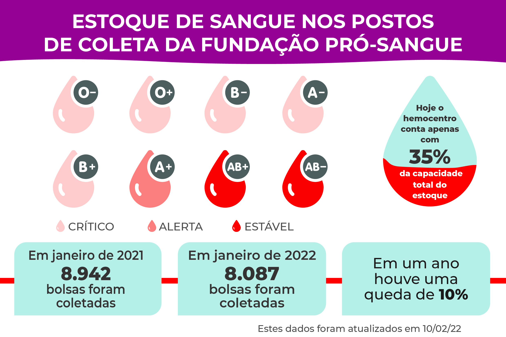

Por que Doar Sangue
A doação de sangue é um ato altruísta e fundamental para a saúde pública, que desempenha um papel crucial na manutenção da vida e no tratamento de diversas condições médicas. Essa prática envolve a coleta de sangue de doadores voluntários, que posteriormente é processado e distribuído para pacientes em hospitais e clínicas. Embora muitos possam considerar a doação de sangue como uma simples contribuição para a sociedade, sua complexidade e importância não podem ser subestimadas.
Para compreender plenamente a doação de sangue, é essencial analisar os diversos aspectos que a cercam, desde os motivos que levam as pessoas a doar, passando pelos procedimentos envolvidos, até os benefícios e desafios associados a esse ato benevolente. Além disso, é crucial destacar a necessidade contínua de doadores, a segurança rigorosa que envolve a coleta e o impacto direto que a doação de sangue tem na vida de pacientes que lutam contra doenças graves ou enfrentam situações de emergência.
Nesta introdução robusta, exploraremos esses tópicos em detalhes, aprofundando nossa compreensão sobre a doação de sangue e sua importância para a sociedade e a saúde humana.

Como Doar
Doar sangue é um ato nobre e simples, mas que tem o poder de salvar vidas e fazer uma diferença significativa na saúde de muitas pessoas. Se você deseja ser parte desse gesto generoso, aqui estão os passos básicos sobre como doar:
- Verifique os requisitos: Antes de doar, certifique-se de que atende aos requisitos básicos, como idade, peso e boa saúde geral. Esses critérios podem variar dependendo das regulamentações do banco de sangue local.
- Encontre um local de doação: Localize um banco de sangue, hospital ou unidade móvel de doação de sangue em sua região. Você pode fazer isso facilmente através de uma pesquisa na internet, entrando em contato com centros médicos locais ou por meio de organizações de doação de sangue.
- Agendamento (opcional): Em alguns lugares, é possível agendar um horário para a doação de sangue, o que pode economizar tempo. No entanto, muitos bancos de sangue também aceitam doações sem agendamento prévio.
- Registro e triagem: Ao chegar ao local de doação, você precisará preencher um formulário com informações pessoais e de saúde. Em seguida, passará por uma triagem médica, onde sua pressão arterial, pulso, temperatura e níveis de hemoglobina serão verificados.
- Doação de sangue: Após a triagem, você será conduzido a uma área de doação. Um profissional de saúde especializado fará a coleta de sangue de uma veia em seu braço usando uma agulha esterilizada.
- Recuperação: Após a doação, é recomendável que você descanse por alguns minutos e tome algum líquido para se reidratar.
- Lanche: Muitos bancos de sangue oferecem um lanche para garantir que você esteja se sentindo bem antes de partir.
- Retorno à rotina: A maioria das pessoas pode retomar suas atividades normais após a doação. Evite esforço físico intenso no mesmo dia.
Lembre-se de que a doação de sangue é um processo seguro e rigorosamente controlado, e os profissionais de saúde estão lá para garantir seu bem-estar em todos os momentos. Seu sangue doado será testado, processado e armazenado com segurança até ser necessário para ajudar pacientes em situações de emergência ou para tratamentos médicos.
Sua doação de sangue pode fazer a diferença na vida de alguém e contribuir para a saúde da comunidade. Portanto, considere tornar a doação de sangue uma parte regular de sua vida e faça parte desse gesto nobre de solidariedade.